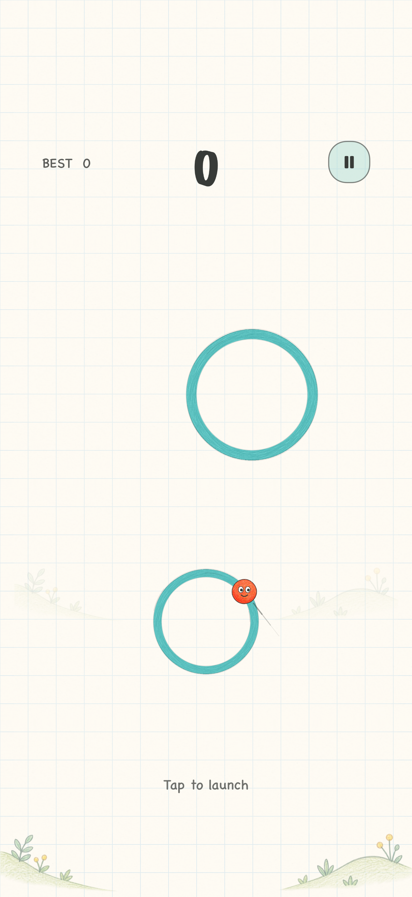

Plain ring
A different size calls for a different moment.

 NEXT ORBIT
NEXT ORBITiPhone · iPad · Available on the App Store
One little ball. One good moment. One more ring worth a try. Watch the tangent, tap to launch, and catch your next orbit.
Download on the App StoreNo account needed. Just a moment to play.
Find the line. Pick your moment.01 / Simple to learn. A moment to master.
Your finger chooses when, not where. The ball flies along the tangent of its current ring. Wait for the short guide to point into the next ring, then tap.
Skippable practice helps you aim, followed by three visual scoring cards and a guide to the rings.
As the ball orbits, look for its short tangent guide.
Tap anywhere on the screen to choose your moment.
Land on the next ring and find your next opening.
02 / Every ring has a little personality
The familiar green rings come in different sizes. Special rings put a fresh spin on your next jump.
A different size calls for a different moment.

Catch it to raise your orbit speed by one level.

Catch it to lower your orbit speed by one level.

It breaks after a full lap. Jump off in time.

Catch it to reverse your orbit direction once.

Aim ahead as it travels sideways. It stops when caught.
03 / A few more paths. A little more instinct.
As you progress, some encounters offer three or four targets. Choose a steadier route or try a smaller landing. Moving rings gradually travel farther and faster.
Launch before three seconds from the start or last catch, then catch the next ring to extend your combo. The launch time counts, even if the flight finishes later.
Waiting too long resets the combo, not your earned points. Pausing stops the timer. Special rings do not award extra points.
04 / A look inside
A glance, a blink, a little smile. Rings spring back on takeoff and landing. The same soft thud gives every catch a satisfying landing.
Save a run with a nickname. Each name keeps its best score; equal scores share a rank. No Game Center or other account is needed. There is no online leaderboard in the current version.

The game itself can be played offline. The current version has no account login, score upload or cloud-sync feature.
The app currently supports iPhone and iPad on iOS / iPadOS 17 or later. iPhone uses portrait; iPad supports portrait and landscape.
Next Orbit is available on the App Store for iPhone and iPad. Download on the App Store.
A short tutorial appears when you first start and can be skipped. Replay it from “How to play” on the menu. Practice does not change your real scores.
A small hand-drawn game for a spare moment.
Download on the App Store